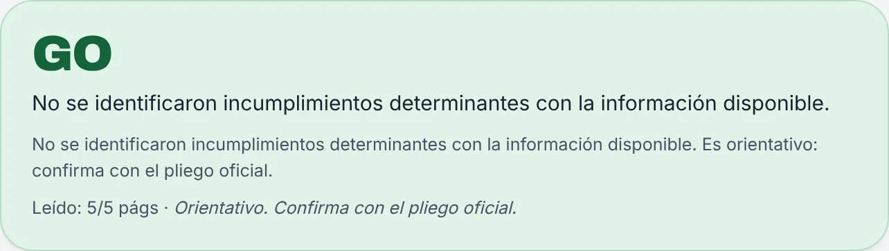
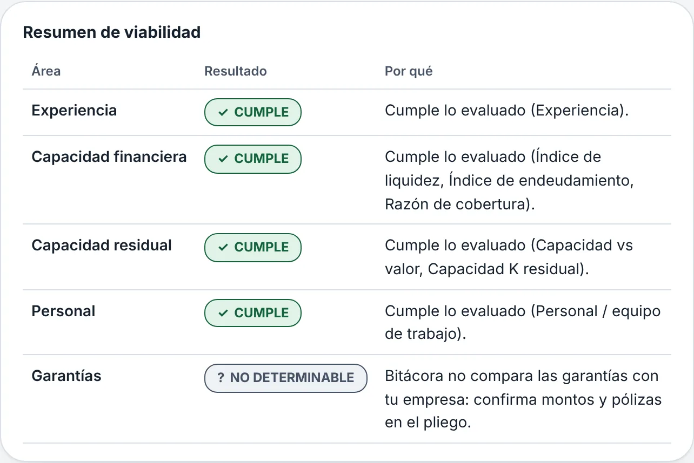
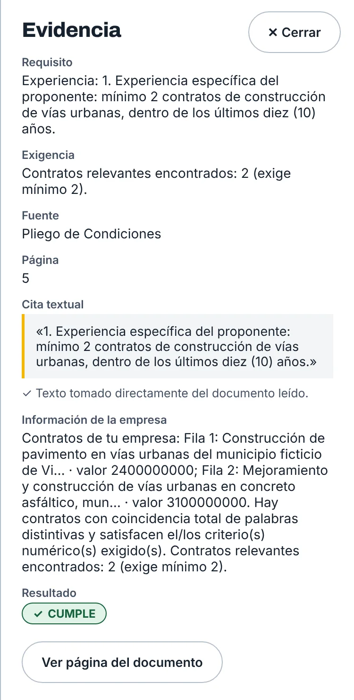
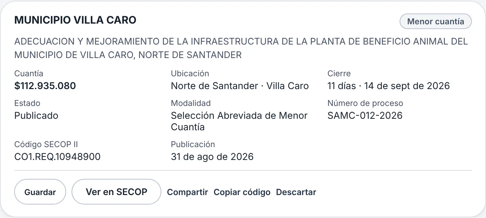
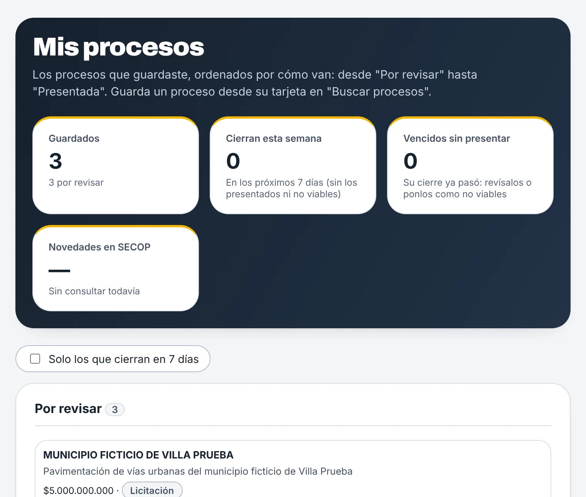
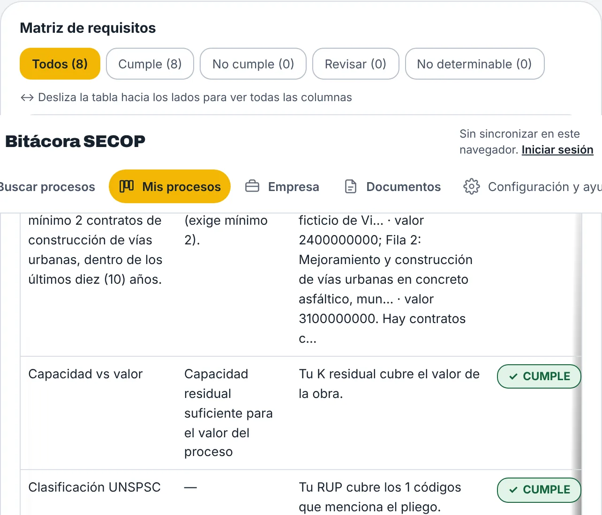
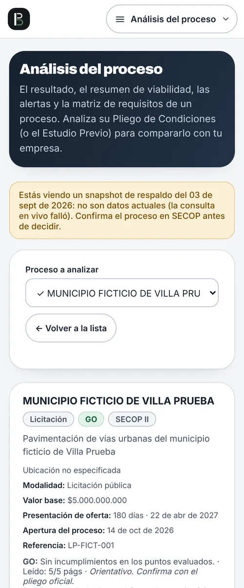
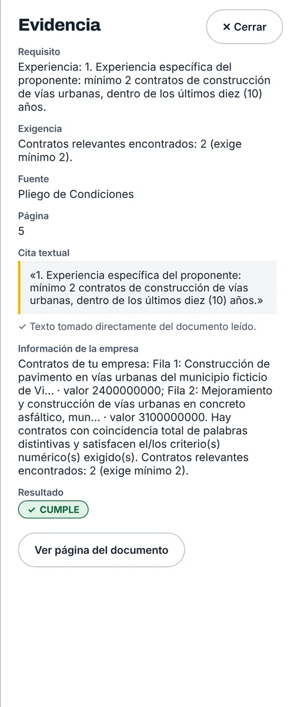
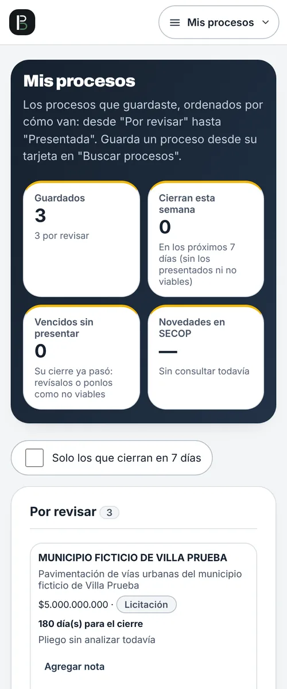

Descubre a qué licitaciones de obra puedes presentarte, con la página del pliego que lo respalda.
Busca procesos de SECOP II, guarda los que te interesan y compara cada pliego con los datos de tu empresa. Si algo no se puede comprobar, la app lo dice.
Sin crear cuenta. Funciona en tu navegador, en computador y celular.



Capturas de la app con una empresa y un proceso de ejemplo (ficticios).
Datos abiertos de datos.gov.co, actualizados una vez al día Pliegos y estudios previos
En PDF o Word, también escaneados Tu empresa
Certificado RUP, RUT y experiencia en Excel
De la búsqueda a la decisión, en tres pasos
Buscar no analiza nada: solo te muestra los datos del proceso. El análisis lo haces cuando guardas el proceso que de verdad te interesa.
Busca los procesos de tu zona
Filtra por departamento, municipio, entidad, valor y palabra clave, o escribe lo que buscas con tus palabras. Cada ficha trae cuantía, cierre, modalidad y el código de SECOP II.

Guarda y sigue cada proceso
Mis procesos ordena lo guardado por etapa, avisa los que cierran esta semana y revisa en SECOP si el proceso cambió. Cada tarjeta admite tu nota.

Sube el pliego y compáralo con tu empresa
Cargas el PDF del pliego o del estudio previo. Bitácora lo lee, extrae los requisitos habilitantes y los compara con tu RUP, tus indicadores, tu experiencia y tu equipo.
Cuatro respuestas posibles, y ninguna inventada
Cada resultado lleva su nombre escrito y su símbolo, no solo un color. El cumplimiento lo decide un motor de reglas con el texto del documento; la IA no decide nada.
- ✓ GO
No se identificaron incumplimientos determinantes con la información disponible. Aun así, confirma con el pliego oficial.
- ! REVISAR
Hay puntos por confirmar antes de decidir: un dato por validar o una condición que la app no puede dar por cumplida.
- ✕ NO-GO
Hay al menos un requisito crítico que tu empresa aparentemente no cumple. La app te dice cuál y cuánto falta.
- ? NO DETERMINABLE
No hay evidencia suficiente para afirmar nada: falta un dato de tu empresa o el documento no lo dice con claridad.
Cada resultado dice de qué página sale
No tienes que creerle a la app. Abre cualquier fila de la matriz y verás el requisito, la fuente y la cita textual del pliego.
- La página y la cita. El panel de evidencia muestra el fragmento exacto del documento donde se leyó el requisito.
- Lo que dice tu empresa. Al lado, los contratos o indicadores tuyos con los que se hizo la comparación.
- Un salto al documento. «Ver página del documento» abre el PDF en esa página para que lo verifiques.

Lo que Bitácora compara con tu empresa
Los requisitos salen del pliego o del estudio previo de cada proceso, no de una lista fija.
Experiencia
Contratos que acreditan por objeto, valor, ventana de años y código UNSPSC. Si hay consorcio o unión temporal, suma la experiencia de cada integrante.
Capacidad financiera
Liquidez, endeudamiento y cobertura de intereses contra lo que exige el pliego, con capital de trabajo calculado cuando el documento lo permite.
Capacidad residual
Tu K declarada menos el saldo de los contratos que tienes en ejecución, frente a la que pide el proceso.
Personal
El equipo mínimo que pide el documento, con cargo, formación y experiencia, frente a los profesionales que registraste.
Garantías
Seriedad, cumplimiento, anticipo y demás pólizas, con cifra y página.
Se leen y se citan, pero no se comparan con tu empresa: esa verificación es tuya.
Observaciones al pliego
Si el documento se contradice o falta un dato, la app arma un borrador de observaciones con la página de cada punto, listo para copiar.
También en el celular
Pensada para gerentes e ingenieros que revisan procesos desde la obra: los mismos resultados y la misma evidencia, en pantalla pequeña.



Cómo cuida tus datos y tus decisiones
Tus datos son tuyos
Cada empresa ve solo lo suyo. Puedes descargar un respaldo, borrar tu cuenta y, sin cuenta, todo se queda en tu navegador. Política de datos
La IA solo transcribe
«Leer con IA» pasa a texto los PDF escaneados. No extrae requisitos ni decide nada: el cumplimiento lo decide siempre el motor de reglas.
Orientativo, no jurídico
Es una ayuda para decidir si vale la pena presentarse. No reemplaza leer el pliego completo ni la revisión de un profesional.
Preguntas frecuentes
¿Necesito crear una cuenta?
No. Puedes usar la app sin cuenta: tus empresas, procesos y análisis quedan guardados en tu navegador. Con una cuenta se sincronizan entre tus dispositivos.
¿De dónde salen los procesos?
De los datos abiertos de SECOP II en datos.gov.co, que se actualizan una vez al día. Si la consulta en vivo falla, la app te avisa y muestra un respaldo con su fecha. Confirma siempre el proceso en SECOP antes de decidir.
¿Qué documentos puede leer?
Pliegos de condiciones y estudios previos en PDF o Word, incluso escaneados. Los escaneados se pasan a texto con OCR o con «Leer con IA». También lee el RUP y el RUT de tu empresa y tu experiencia en Excel, PDF o Word.
¿Qué pasa con los documentos que cargo?
El texto del pliego queda en tu navegador. Si lees un escaneado con IA, el PDF se envía para transcribirlo y se borra al terminar. Los detalles están en la política de tratamiento de datos.
¿Qué hace cuando no está seguro?
Responde «No determinable» o «Revisar» y dice qué falta. Nunca marca como cumplido un requisito que no pudo comprobar.
¿Reemplaza la revisión del pliego?
No. Te ahorra tiempo para decidir si un proceso te conviene y te lleva a la página que importa. La decisión final y la revisión jurídica son tuyas.
Prueba con un proceso de tu zona
Abre la app, busca un proceso y mira cómo queda frente a los datos de tu empresa.
Abrir la app